WARWICK
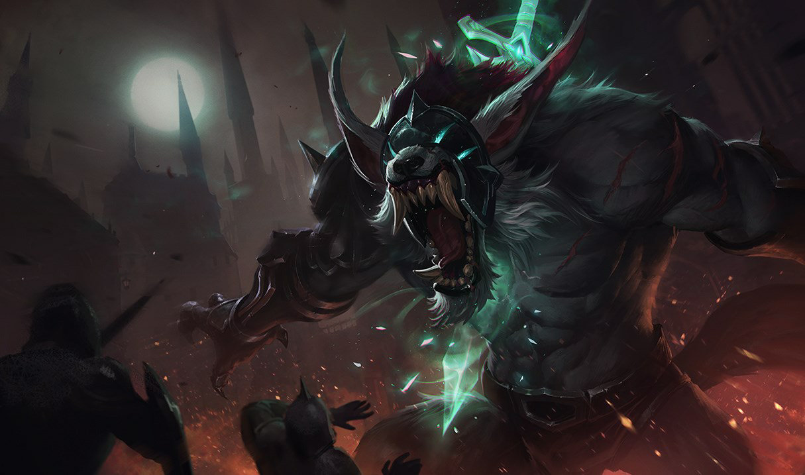
WARWICK CINZENTO
 975
975
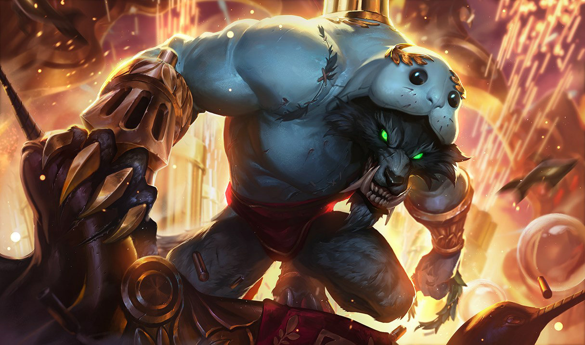
URF, O PEIXE-BOI
520
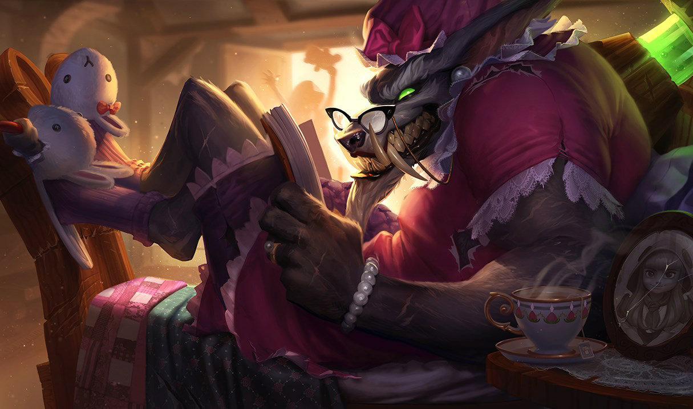
WARWICK LOBO MAU
1820
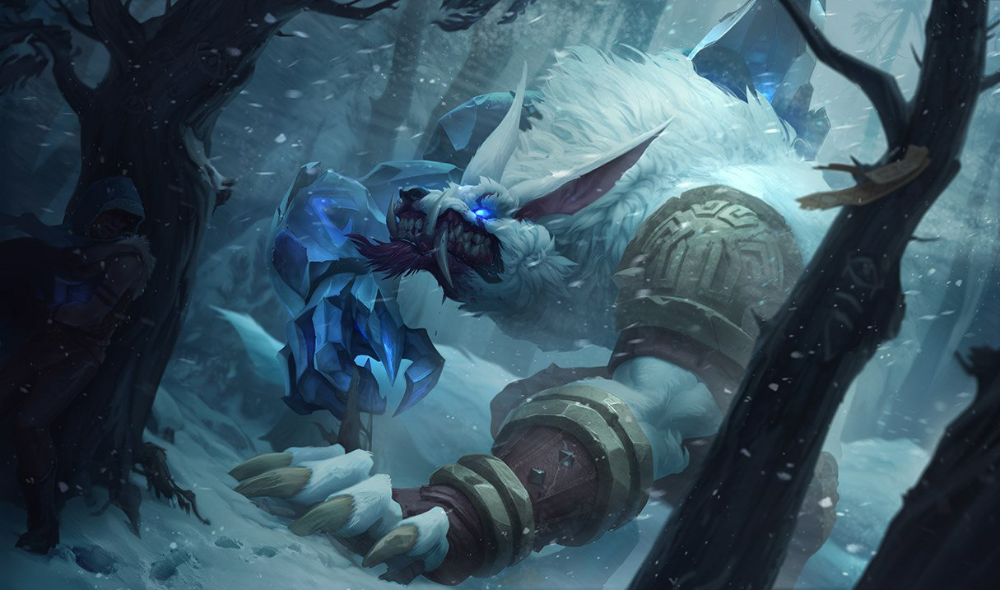
WARWICK CAÇADOR DA TUNDRA
975
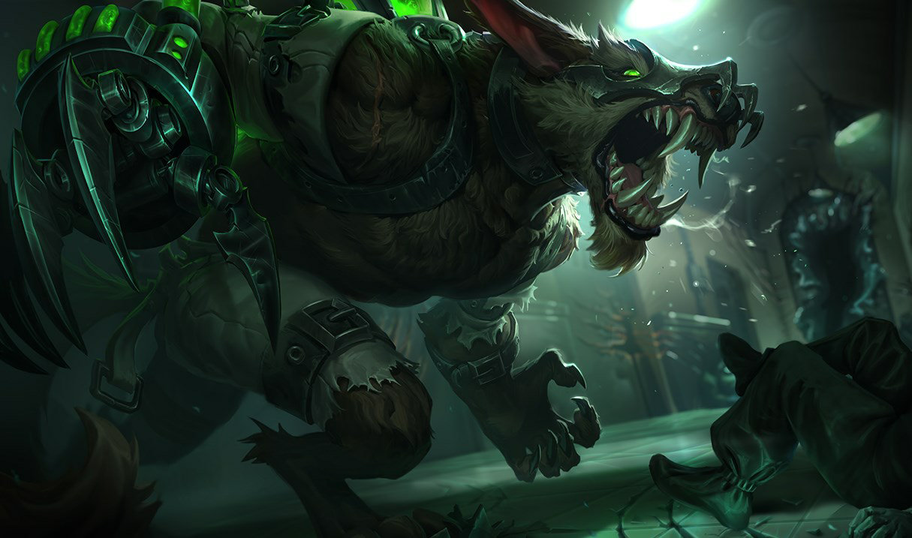
WARWICK SELVAGEM
1320
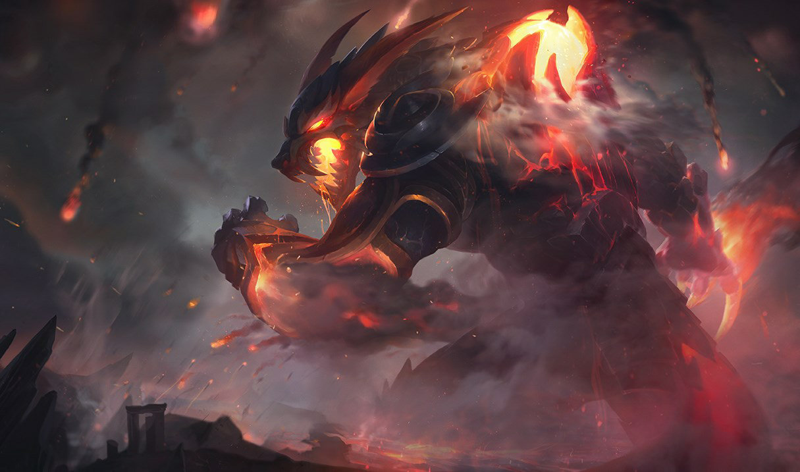
WARWICK PRESAS DE FOGO
1320

WARWICK HIENA
1320
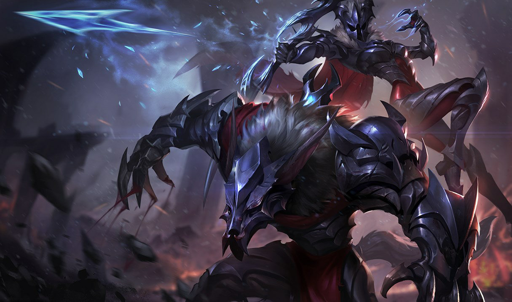
WARWICK SAQUEADOR
1320
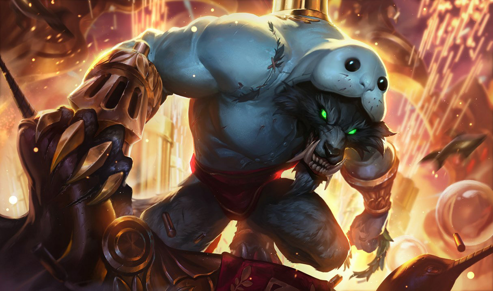
URFWICK
1320
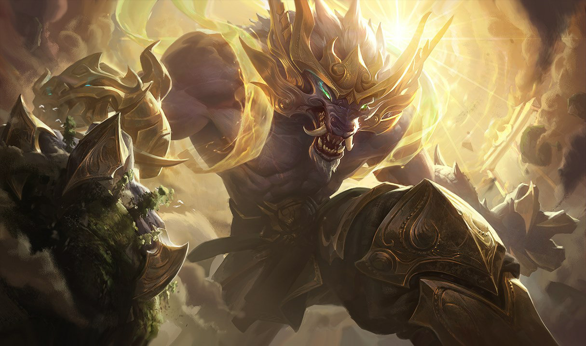
WARWICK GUARDIÃO LUNAR
1320
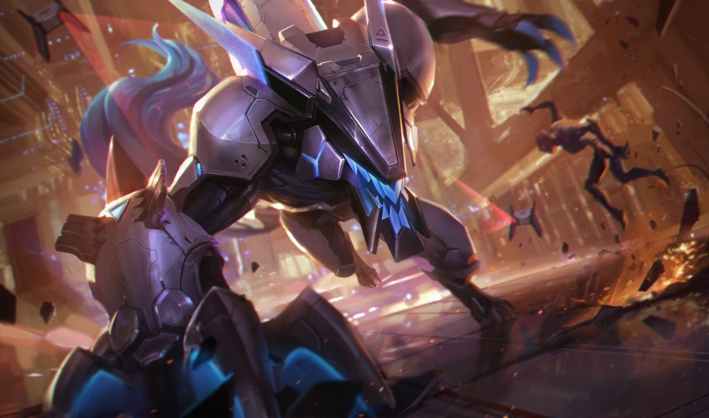
PROJETO: WARWICK
1320
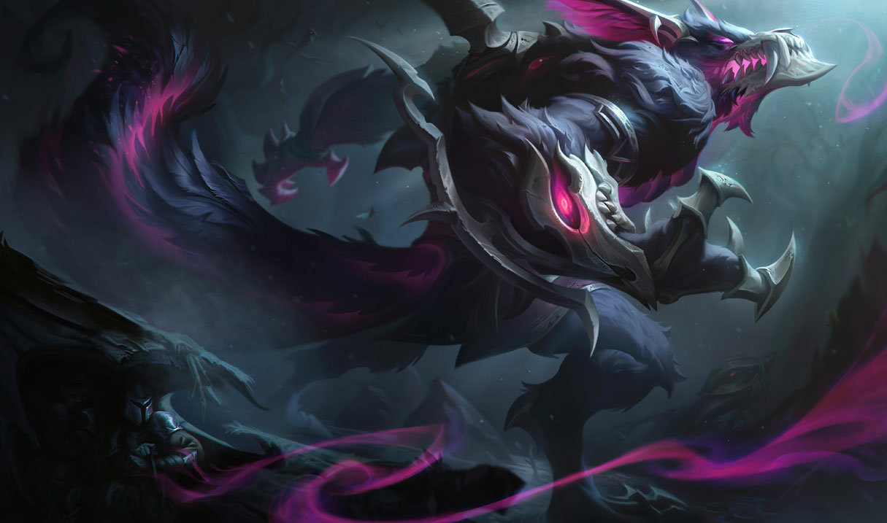
WARWICK DEUS ANTIGO
1320
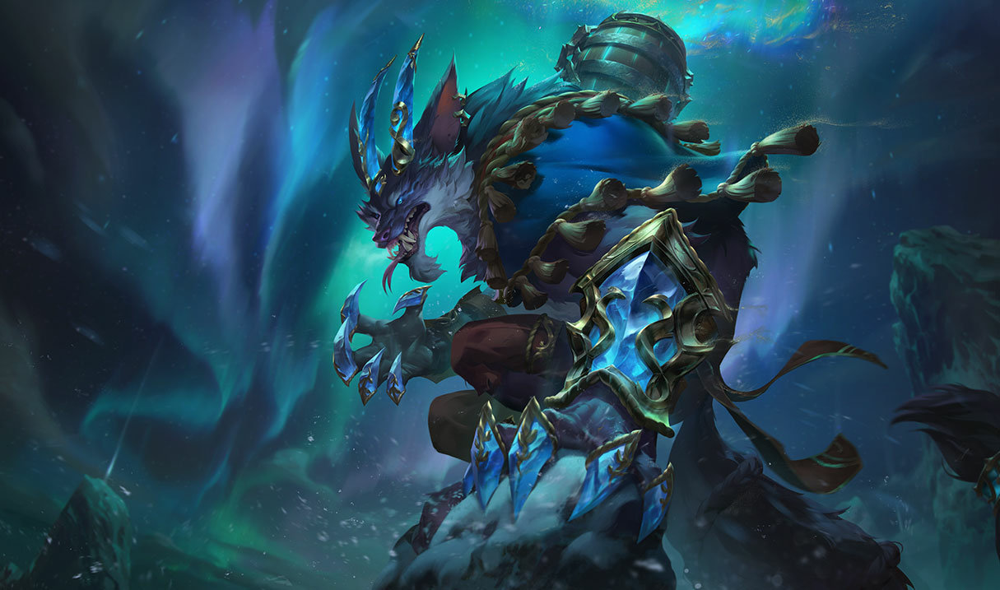
WARWICK BENÇÃO DO INVERNO
1320
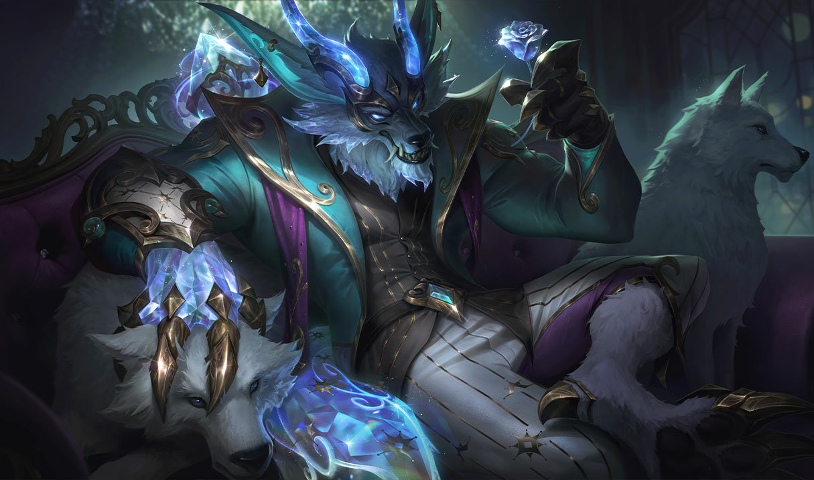